Hybrid Connectivity
Connected the on-premises VMware environment to AWS through pfSense using AWS Site-to-Site IPsec VPN.
AWS • HYBRID CLOUD • NETWORKING • SECURITY
I designed and deployed a hybrid cloud environment that connects my VMware-based enterprise infrastructure to AWS through pfSense. The project combines cloud networking, secure routing, compute, identity, logging, monitoring, and redundancy into a working enterprise-style architecture.
Connected the on-premises VMware environment to AWS through pfSense using AWS Site-to-Site IPsec VPN.
Configured both AWS-provided VPN tunnels and validated tunnel establishment from AWS and pfSense.
Built a dedicated VPC with public and private subnets, route tables, an Internet Gateway, and controlled hybrid routing.
Deployed EC2 workloads for public web services and private application infrastructure.
Applied security groups, IAM roles, root-account MFA, IMDSv2, and network-level access restrictions.
Used CloudTrail, CloudWatch, alarms, and S3 to support visibility, auditing, and operational monitoring.
HYBRID ARCHITECTURE
The project extends the on-premises enterprise environment into AWS while keeping both environments logically segmented.
pfSense acts as the hybrid-cloud edge device and provides encrypted Site-to-Site connectivity between the local corporate networks and the AWS VPC.
ON-PREMISES
VMware Workstation
|
|
+----------------+
| pfSense |
| Firewall / VPN |
+----------------+
|
Site-to-Site IPsec VPN
Tunnel 1 + Tunnel 2
|
v
AWS VIRTUAL PRIVATE
GATEWAY
|
v
+------------------+
| CORP-VPC |
| 10.10.0.0/16 |
+------------------+
|
+---------------+---------------+
| |
v v
CORP-PUBLIC-SUBNET CORP-PRIVATE-SUBNET
Public Workloads Private Workloads
| |
v v
CORP-WEB01 CORP-APP01
10.10.10.133 Private EC2
| |
+---------------+---------------+
|
v
AWS SECURITY & OPERATIONS
-------------------------
IAM
Security Groups
CloudTrail
CloudWatch
S3
AWS NETWORKING
I created a dedicated AWS VPC using the 10.10.0.0/16 address space and separated cloud workloads into public and private subnets.
The public subnet supports internet-facing resources while the private subnet provides a separate security zone for internal application infrastructure.
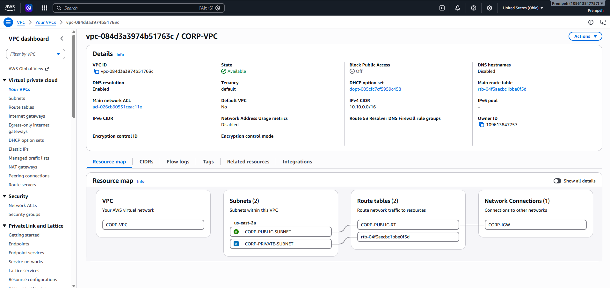
The cloud environment contains multiple EC2 workloads with different infrastructure roles.
The public-facing system provides the web-service layer while the private system demonstrates separation of application workloads from directly exposed infrastructure.
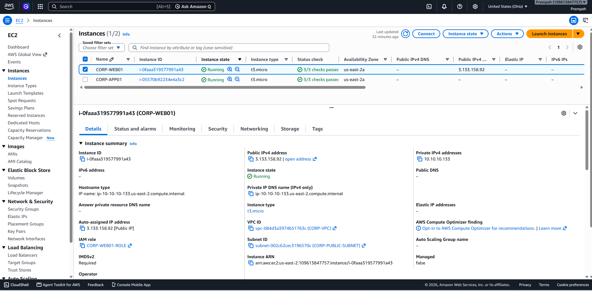
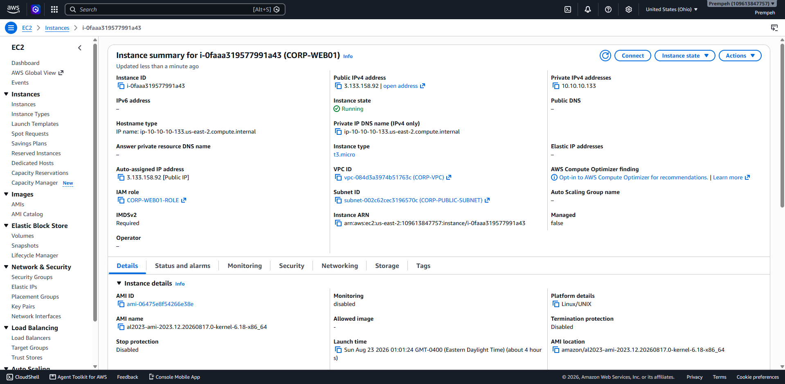
CLOUD SECURITY
Security groups were created according to workload role instead of applying the same access policy to every EC2 instance.
The web-server security group supports required administration and HTTP connectivity, while the private application security group uses a more restrictive inbound policy.
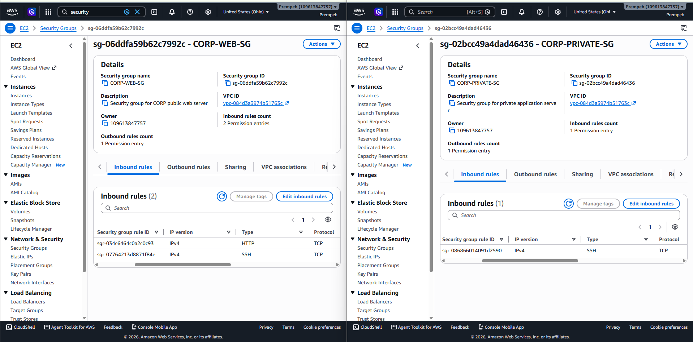
HYBRID CONNECTIVITY
AWS Site-to-Site VPN securely connects the local pfSense firewall to the AWS Virtual Private Gateway.
AWS provides two VPN tunnels for the connection. Both endpoints were configured in pfSense to provide redundant encrypted paths.
pfSense represents the on-premises side of the AWS Site-to-Site VPN connection.
AWS Virtual Private Gateway provides the cloud-side VPN termination point for the CORP VPC.
Traffic between environments is encrypted through IPsec tunnels across the public network.
Routes direct on-premises and AWS traffic through the hybrid VPN connection.
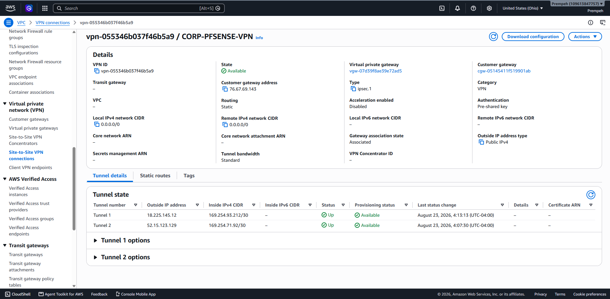
Tunnel status was also validated directly from pfSense rather than relying only on the AWS console.
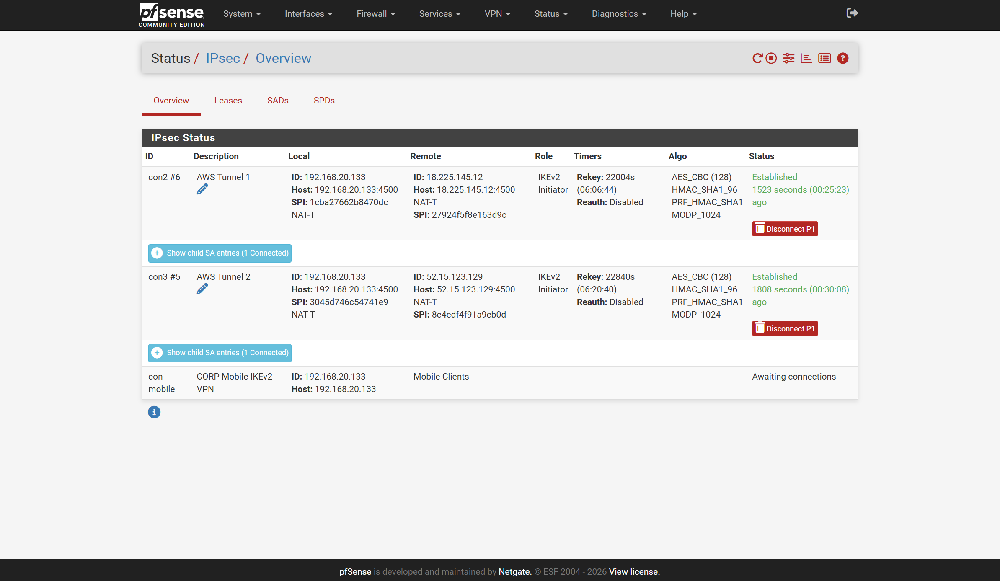
RESILIENCY
The dual-tunnel design provides a second VPN path when one tunnel is unavailable.
Tunnel state was observed during validation to verify that the secondary connection could remain available independently of the primary path.
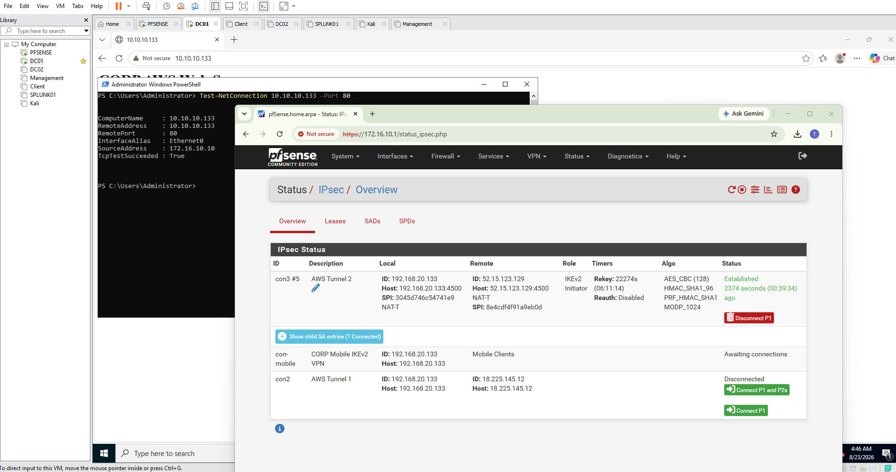
CONNECTIVITY VALIDATION
Establishing the VPN tunnel was only part of the test. I also validated real application connectivity across the hybrid network.
DC01 on the on-premises network successfully connected to the AWS web server at private address 10.10.10.133 on TCP port 80.
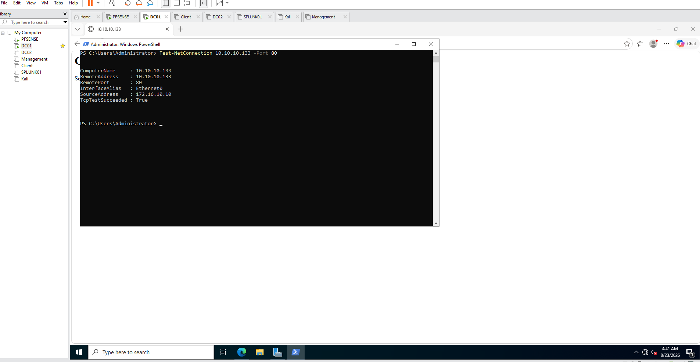
The private AWS address was also tested at the application layer from the on-premises environment.
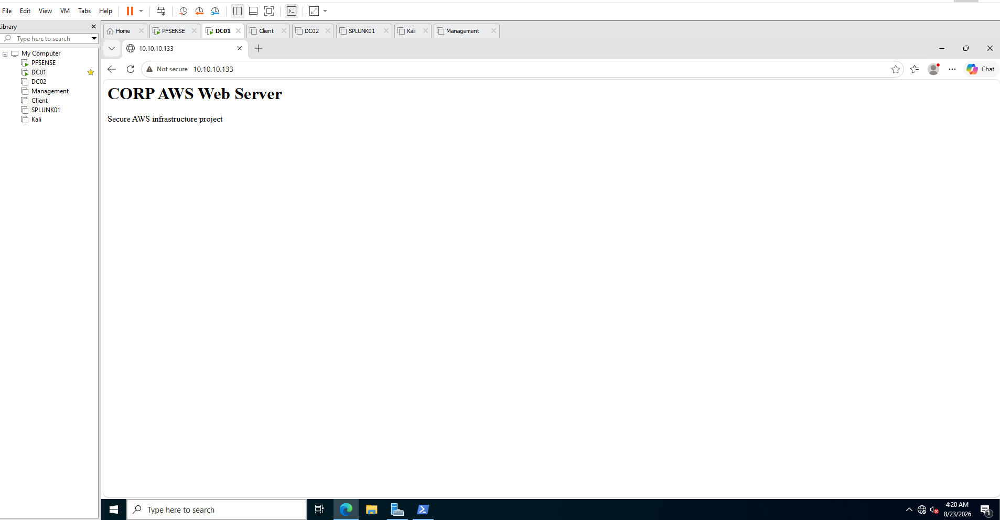
Administrative access to the Linux EC2 workload was validated using SSH and key-based authentication.
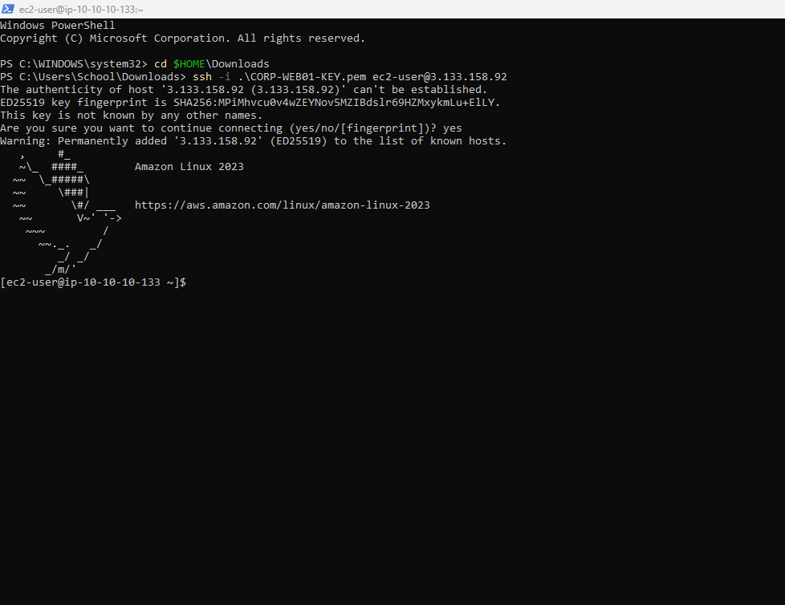
IDENTITY & ACCESS MANAGEMENT
IAM was used to support service permissions and improve account security instead of embedding long-lived credentials into cloud workloads.
The environment includes IAM roles for AWS resources, root-account MFA, and no active root access keys.
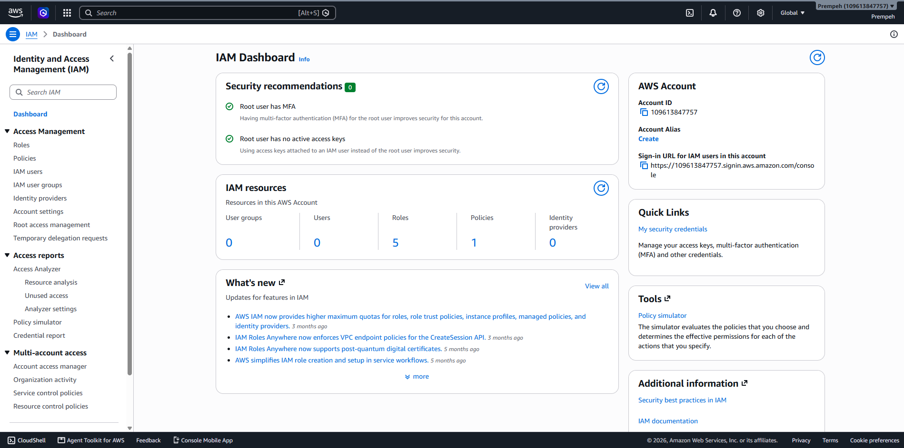
Amazon S3 was incorporated into the environment for project storage and CloudTrail log retention.
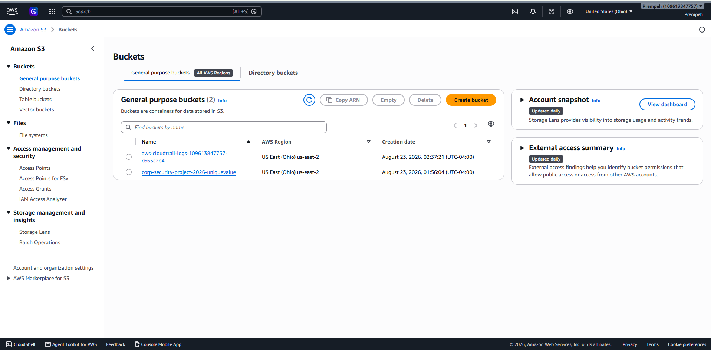
AUDITING
AWS CloudTrail was enabled to provide an audit trail of management-plane activity inside the AWS environment.
This provides visibility into infrastructure changes such as VPN creation, gateway attachment, routing changes, and monitoring configuration.
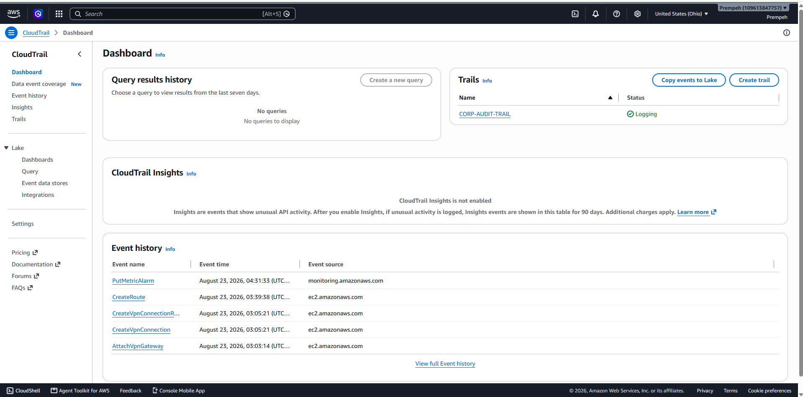
MONITORING
Amazon CloudWatch was configured to provide operational visibility into EC2 workloads and alert on abnormal resource conditions.
CPU utilization metrics provide visibility into compute workload behavior.
NetworkIn and NetworkOut metrics help track traffic activity on cloud workloads.
EC2 status-check alarms support detection of infrastructure or instance failures.
Resource thresholds can trigger alarms when utilization exceeds defined limits.
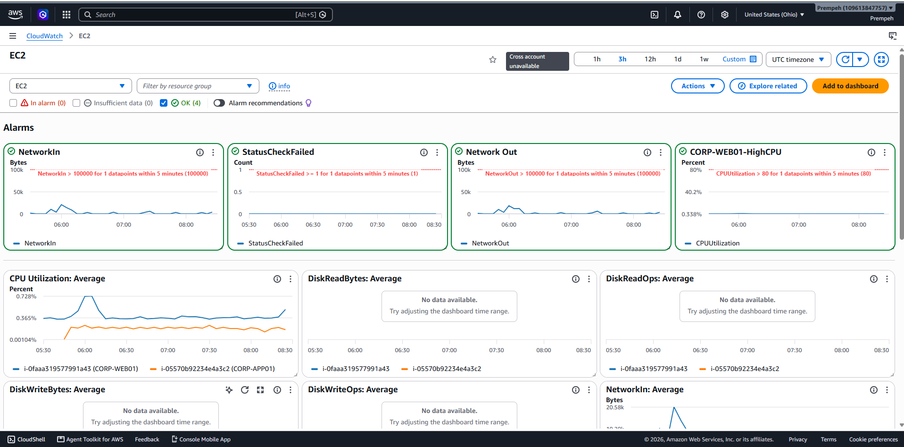
On-Premises Infrastructure
|
v
pfSense Firewall
|
+---- Firewall Policy
|
+---- Site-to-Site IPsec
|
v
AWS Virtual Private Gateway
|
v
CORP-VPC
10.10.0.0/16
|
+-------------------------------+
| |
v v
Public Subnet Private Subnet
| |
v v
Public EC2 Private EC2
| |
+---------------+---------------+
|
v
Security Groups
|
v
IAM Permissions
|
+----------+----------+
| |
v v
CloudTrail CloudWatch
Audit Logs Metrics / Alarms
|
v
S3
VALIDATED
Tunnel successfully established.
VALIDATED
Secondary tunnel successfully established.
PASS
On-premises host reached AWS private IP
over TCP port 80.
PASS
AWS web application accessible across
the hybrid VPN.
PASS
SSH connectivity to Amazon Linux
successfully validated.
OPERATIONAL
CloudTrail and CloudWatch provide
audit and operational visibility.
Building the hybrid environment required troubleshooting across cloud networking, VPN negotiation, routing, access control, compute, and monitoring.
Validated Phase 1 and Phase 2 tunnel state across pfSense and AWS.
Verified routing between 172.16.x.x on-premises networks and the AWS 10.10.0.0/16 VPC.
Adjusted cloud access policies to permit required application and administrative traffic.
Tested HTTP and SSH connectivity using service-specific tools.
Configured CloudWatch metrics and alarms and validated CloudTrail event logging.
Validated both AWS-provided VPN tunnels and observed tunnel behavior during testing.
Working on-premises-to-AWS connectivity through pfSense Site-to-Site IPsec VPN.
Both AWS VPN tunnel endpoints configured and successfully established.
Public and private cloud workloads separated inside a dedicated VPC.
Security groups, IAM roles, root MFA, and IMDSv2 applied.
CloudWatch metrics and alarms provide visibility into EC2 workload health.
CloudTrail records AWS management actions and stores audit data in S3.
The GitHub repository contains additional implementation details, AWS configuration evidence, networking documentation, VPN setup, testing results, troubleshooting notes, and supporting project documentation.